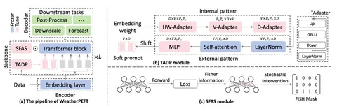
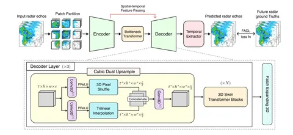

Вернее, не в Рио, а на прошедшей ICLR. И не то чтобы о погоде — о статьях, связанных с её прогнозированием. Руководитель группы ML в Яндекс Погоде Пётр Вытовтов поделился мыслями о трендах и занятными публикациями на тему. Слово Петру.
Первое, что я заметил, ещё до приезда в Рио, что в этом году на ICLR было заметно больше погодных работ, чем раньше. С одной стороны, это хорошо, что область погодного ML развивается. С другой — конкуренция растёт, и надо постоянно больше и качественнее работать, чтобы успевать за отраслью и сохранять лидирующие позиции. Основная масса работ была по двум направлениям: foundation-погодные модели и наукаст.
А теперь к самим статьям.
Task-Adaptive Parameter-Efficient Fine-Tuning for Weather Foundation Models
Есть такое направление, как тюнинг fountation-погодных моделей под различные downstream-задачи. Это связано с тем, что для финальной решаемой задачи не всегда необходимо моделировать с хорошим качеством всю атмосферу, но при этом всё-таки хочется учитывать эту информацию. Поэтому можно подтюнить модель под необходимый параметр и немного принебречь качеством остальных.
Здесь авторы предлагают не тюнить модель целиком, а использовать, так называемый, обучаемый soft prompt, чтобы говорить модели, какую именно задачу она должна сейчас решать. Утверждается, что модель хорошо учится с ним работать. Авторы проверяли работу своего подхода поверх модели Aurora от Microsoft и получили хорошие результаты для задач super-resolution, прогноза осадков и постпроцессинга ансамблевых прогнозов.
Идейно подход выглядит интересно, но пока он проверялся только на грубом разрешении сетки, и не совсем понятно как этот подход себя покажет на продовых моделях.
Extreme Weather Nowcasting via Local Precipitation Pattern Prediction
Если рассматривать наукаст, как задачу перемещения существующих осадков, то она — по большей части — уже решена. Но есть две открытых проблемы в этой области: возникновение новых осадков и прогноз экстремальных значений. Здесь авторы концентрируются на второй подзадаче.
Они делают предположение, что одна из причин плохого восстановления сильных осадков — структура декодера, и предлагают его модификацию. При этом в работе сравнивают разные варианты того, как можно делать апсемплинг картинки в процессе декодирования. Интересно, что авторы — одни из немногих, у которых Фурье-лосс для задачи наукаста заработал лучше стандартно используемых MSE и MAE.
Авторы проверялись на стандартных датасетах SEVIR и MeteoNet, а также на их собственном KMA, который должен быть публично доступен. Не во всех сетапах удалось получить SotA, но картинки выглядят заметно чётче по сравнению с аналогами.
#YaICLR26
ML Underhood

